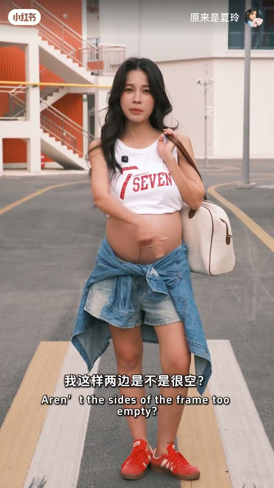
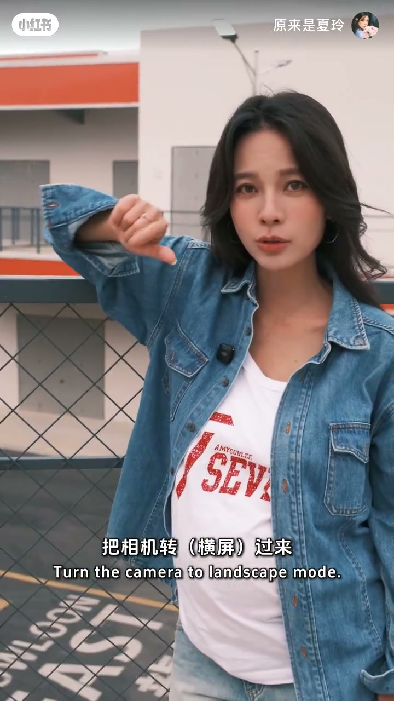

内容要点
一支 53 秒的街拍速成教学。UP 主「原来是夏玲」用错误示范开场，逐条给出正确口令：机位举高、侧位站位避开白色背景；头顶不留空间、把地面放进来让画面一分为二、远离水沟等杂景保证纯背景；再给两个姿势细节——倒肩伸手、头顶放画面右上角拍半身，垮包看侧方等风吹出松弛酷感；最后附一个男生也适合的通用拍法：相机转侧面、高角度、半身留给背景、不要看镜头。
知识结构
直怼正拍被否定：「你信不信这个时段很出片，你这么拍肯定是不行的」。正确做法：到人物侧面，不要拍到后面白色的景，机位举高。
头顶不留太多空间；让被拍者走过来，把地面放进画面底部形成一分为二的分隔；提醒往后站远离水沟等杂景——「这样纯粹的背景板才能出大片」。
倒个肩膀、伸手；半身构图尽量把头顶放在画面右上角；垮包、看侧方、等风吹过来，拍出「松弛酷酷的感觉」。
相机转到侧面，高角度拍，把一半画面留给后面的背景，尽量不看镜头，更松弛自然。
街拍出片 = 举高机位侧位站 + 头顶不留空间/画面一分为二/纯背景 + 倒肩伸手的姿势细节 + 松弛不盯镜头。管好站位、构图和情绪，手机也能拍出时尚感。
00:00-00:11机位与站位：举高 + 侧位
视频用一句断言开场：「你信不信这个时段很出片，你这么拍肯定是不行的。」紧接着演示两种拍法：直怼镜头的正面平拍是反面教材，正确的做法是「你要到我的侧面，不要拍到后面那些白色的景」。
关键动作是举高机位——「反正你举高，这样是不是很帅」。侧位站位 + 举高机位，是街拍摆脱呆板的第一步。
00:10-00:27构图三招：头顶空间、一分为二、纯背景
第一招是控制头顶空间：「这次不用给我的头留太多的空间」，让被拍者稍微走过来一点，避免头顶大片留白。
第二招是制造画面分割：「你走过来一点，只需要把它放在地上，画面是不是一分为二了」——把地面放进画面底部，形成上下两分的构图，画面立刻有了结构。
第三招是背景做减法：示范者指出「你拍的肯定是废片，是不是有条水沟」，提醒被拍者往后站，避开水沟等杂景。「看，这样纯粹的背景板才能出大片。」背景越纯粹，主体越突出。

00:27-00:44姿势与情绪：细节口令拍出松弛感
姿态口令要具体：「倒个肩膀，伸手。」同时把半身构图拆成可执行的位置要求——「尽量把我的头顶在你的右上角」，让被拍者知道自己该站在画面什么位置。
情绪引导同样有口令：垮着包、看侧方、等风吹过来，「你要给我拍着那种松弛酷酷的感觉」。不是让被拍者刻意做表情，而是用动作把情绪带出来。
00:44-00:53男生也适用的通用拍法
最后一个方案男女通用：「把相机转过来，到我侧面，高角度拍我，把这半部分留给后面的背景。」侧面 + 高角度 + 半身留背景，三个要素和前面的女生示范同构。
点睛之笔是「尽量不要看镜头」——视线不落在镜头上，画面会显得更松弛自然，这是整支视频最可复用的情绪技巧。

完整转录（29段）
以下文本由 Whisper medium 模型自动转录，可能存在少量识别误差，已尽可能修正。
你信不信这个时段很出篇
你这么拍肯定是不行的
你要到我的侧面
不要拍到后面那些白色的景
反正你举高
这样是不是很帅
这次不用给我的头留太多的空间
你走过来一点
我这样两边是不是很空
只需要把它放在地上
画面是不是一分为二了
你拍的肯定是废片
是不是有条水沟
你应该提醒我往后站
看 这样纯粹的背景版才能出大片
倒个肩膀
伸手
没太阳 没景 不要晃
来给我拍个半神的
尽量把我的头顶在你的右上角
等下我这样垮着包
看那边的时候
等风吹过来
你要给我拍着那种松弛酷酷的感觉
来 最后给我拍个男生也适合拍的
把相机转过来
到我侧面 高角度拍我
把这半部分留给后面的背景
尽量不要看镜头